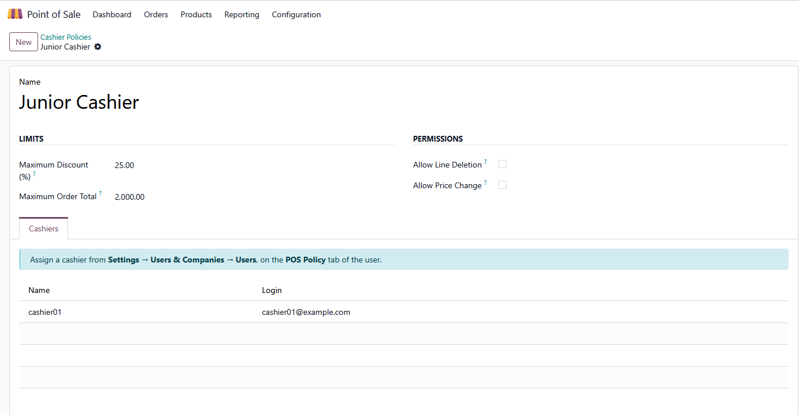
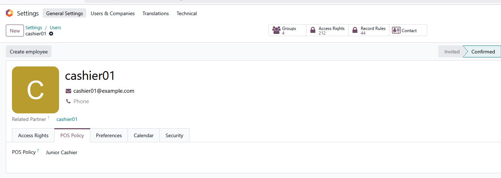
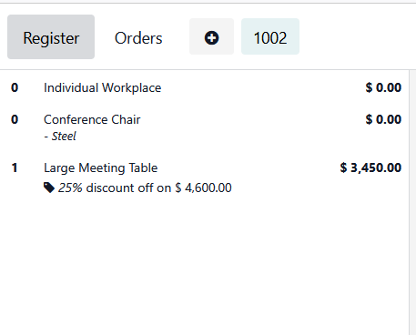

Odoo lets any cashier discount an order to nothing and delete lines at will. This puts a policy behind the till - and re-checks it on the server.
A cashier keys in a 100% discount. Deletes the line a supervisor just added. Types their own price over the pricelist. Rings up an order far beyond what anyone at that till should approve alone. Odoo records all of it without a murmur, and you find out when you reconcile.
Build a policy, then assign it to as many cashiers as you like.
Because the answer to a blocked till is a supervisor, not a workaround.
A PIN the browser never seesThe manager PIN is verified on the server. It is deliberately not loaded into the point of sale, because anything the till loads is readable by whoever is standing at it - which would defeat the whole point. |
Managers skip the keypadAnyone in the POS Manager Override group is waved straight through. Supervisors who are not Odoo users type the PIN instead. Either way the override covers that one order and lapses when it is done. |
The point of sale is a browser, and a browser can be edited. Every limit is applied at the till for the cashier's benefit, then re-checked as the order reaches the server. An order cannot be nudged past its policy in transit.
One honest exception, spelled out below.
1 |
Set the manager PIN. Settings → Point of Sale → EaglePub → Manager PIN. It is set per point of sale. |
2 |
Create a policy. Point of Sale → Configuration → Cashier Policies. |
3 |
Assign cashiers. Settings → Users → the user → POS Policy tab. |
4 |
Grant the override. Put your supervisors in the POS Manager Override group. |

One policy, four limits. A 25% discount ceiling, a 2,000 order ceiling, and both permissions switched off. The Cashiers tab is read-only on purpose - people are assigned from the user form, so a half-made user cannot be created here by accident.

Assigning a cashier. A POS Policy tab on the user, and that is the whole configuration. One policy can cover as many cashiers as you like.

The ceiling doing its job. The cashier asked for more and the line settled at 25% - their maximum. No dialog to dismiss, no argument: the discount they are entitled to is simply the one they get.
Worth knowing before you buy.
The other three limits are re-checked on the server. This one is enforced at the till only, because the server cannot reliably tell a hand-typed price from one a pricelist produced without recomputing every pricelist rule - and a wrong guess would reject legitimate orders.
A cashier has one policy, with all four limits inside it. Scheduling a different policy for weekends or night shifts is not supported.
Install POS Cashier Control - Employee Cashiers, a free companion that appears by itself once you also have Employees in the Point of Sale. Policies can then be set on the employee who actually served the customer, rather than on whoever happened to open the till.
An employee with no policy of their own falls back to the one on their Odoo user.
Bugs and configuration problems are fixed promptly. Ask anything - a straight answer about whether this fits your till is cheaper for both of us than a refund.
Contact the developer